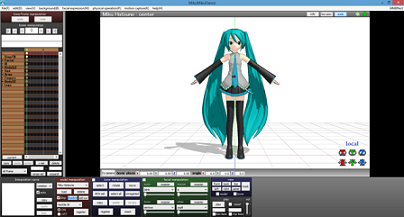

This webside is aiming to share the production of Vocaloid that I found interesting.
For example, The music videos in the page Vocaloid, Game records in ProjectDIVASeries,
MMD(Mikumikudance) in the MikuMikuDance page, and lastly the photos in the Photo_Gallery page.
Note: You can click the button below to see the breif introductions of different pages
Once you are ready.
Follow the top navigation bar and start our journey!
I really hope that all the fans of Vocaloid can find something joy and interested here!
Note: This website doesn't have any commercial purpose.
If any of the illustrations or videos used has tort, please contact me and I will remove it as soon as possible
Vocaloid (ボーカロイド Bōkaroido) is a singing voice synthesizer software. Its signal processing part was developed through a joint research project led by Kenmochi Hideki at the Pompeu Fabra University in Barcelona, Spain, in 2000, and originally was not intended to be a full commercial project. Backed by the Yamaha Corporation, it developed the software into the commercial product "Vocaloid".
The software enables users to synthesize "singing" by typing in lyrics and melody. It uses synthesizing technology with specially recorded vocals of voice actors or singers. To create a song, the user must input the melody and lyrics. A piano roll type interface is used to input the melody and the lyrics can be entered on each note. The software can change the stress of the pronunciations, add effects such as vibrato, or change the dynamics and tone of the voice.
Various voice banks have been released for use with the Vocaloid synthesizer technology. Each is sold as "a singer in a box" designed to act as a replacement for an actual singer.As such, they are released under a moe anthropomorphism. These avatars are also referred to as Vocaloids, and are often marketed as virtual idols; some have gone on to perform at live concerts as an on-stage projection.
The software was originally only available in English starting with the first Vocaloids Leon, Lola and Miriam by Zero-G, and Japanese with Meiko and Kaito made by Yamaha and sold by Crypton Future Media. Vocaloid 3 has added support for Spanish for the Vocaloids Bruno, Clara and Maika; Chinese for Luo Tianyi and Xin Hua; Korean for SeeU and Uni.
The software is intended for professional musicians as well as light computer music users. Japanese musical groups such as Livetune of Toy's Factory and Supercell of Sony Music Entertainment Japan have released their songs featuring Vocaloid as vocals. Japanese record label Exit Tunes of Quake Inc. also have released compilation albums featuring Vocaloids. Artists such as Mike Oldfield have also used Vocaloids within their work for back up singer vocals and sound samples.
Hatsune Miku: Project DIVA (初音ミク -Project DIVA-) is a series of rhythm games created by Sega and Crypton Future Media.
The games have appeared on the PlayStation Portable, PlayStation 3, PlayStation 4, Nintendo 3DS, iOS, Sega RingEdge and PlayStation Vita platforms.
The series currently consists of 5 main titles and 3 spin-offs. The series primarily makes use of Vocaloids, a series of singing synthesizer software, and the songs created using these Vocaloids most notably the virtual-diva Vocaloid Hatsune Miku.
The game is the first video game to utilize the Vocaloid software developed by the Yamaha Corporation.
As the game is a rhythm game, players are allowed to choose from a wide variety of Vocaloid songs, original songs sung by Vocaloids,
including songs sung by Hatsune Miku, Kagamine Rin and Len.
Players also can choose which character they wish to play in the game. Known as modules,
these modules can be completely different characters or simply different costumes for the same characters.
These modules, though not directly controlled by the player, will be the ones appearing in the music videos throughout the game including their specific costumes.
For example, if the player chooses Kagamine Rin for their first character and Hatsune Miku for their second character, during solo songs only Kagamine Rin appears in the video but for duets both Hatsune Miku and Kagamine Rin will appear in the video.
Each of the songs have their own difficulties which are Easy, Normal, Hard and Extreme.
Initially both the Easy and Normal difficulties of a song are unlocked, upon clearing the Normal difficulty, the Hard difficulty will be unlocked and so forth.
Players progress through the game by completing songs and unlocking more new songs until they eventually unlock all songs.
MikuMikuDance (commonly abbreviated to MMD) is a freeware animation program that lets users animate and create 3D animated movies, originally produced for the Vocaloid character Hatsune Miku. The MikuMikuDance program itself was programmed by Garnek (HiguchiM) and has gone through significant upgrades since its creation. Its production was made as part of the VOCALOID Promotion Video Project (VPVP). 
In the Photo_Gallery, I will share with the users some illustrations which are awesome from Pixiv.
You can click the photo and follow the link go to the original pages of the illustrations
-Pixiv
Pixiv (Japanese: ピクシブ Hepburn: Pikushibu) is a Japanese online community for artists. It was first launched as a beta test on September 10, 2007 by Takahiro Kamitani. Pixiv Inc. is headquartered in Sendagaya, Shibuya, Tokyo, Japan.[2] As of September 2016,
the site consists of over 20 million members, over 43 million submissions, and receives over 3.7 billion page views monthly.
Pixiv aims to provide a place for artists to exhibit their illustrations and get feedback via a rating system and user comments.
Works are organized in an extensive tag structure which forms the backbone of the website.
{kind=link}
{kind=link}
{kind=link}